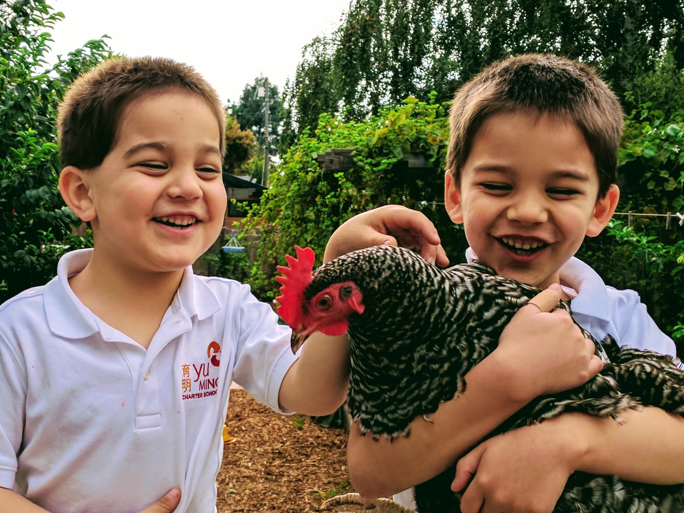
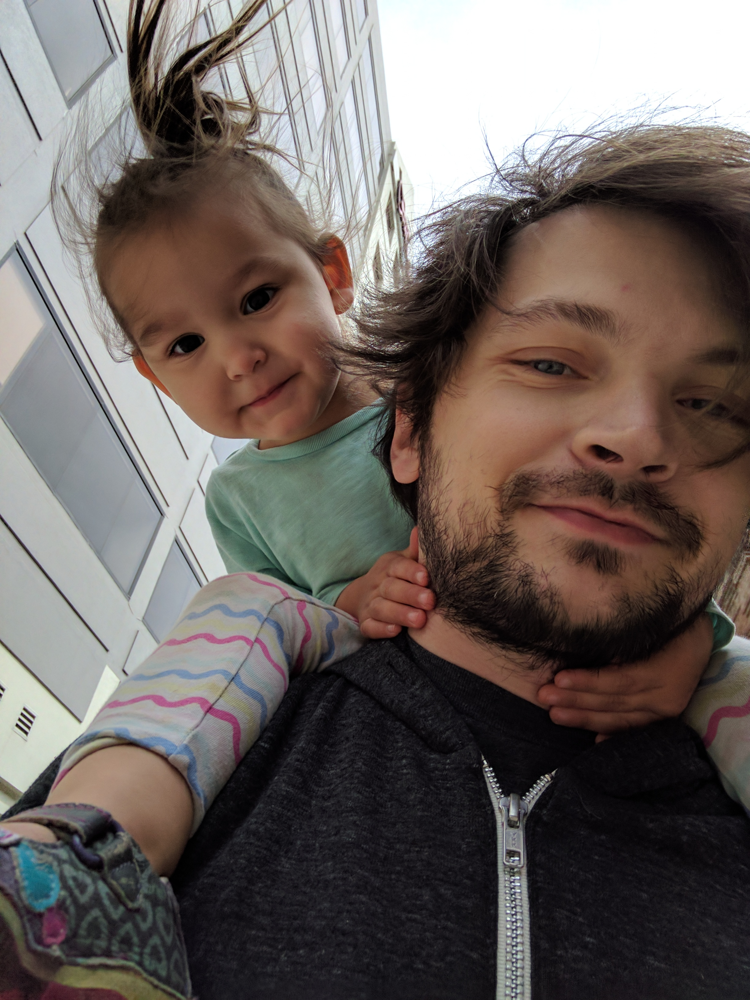

Hello! My name is Corina Andariese, my handle for in-game and most online applications or social media is Brechin (breh-kin). I am a wife of 13 years, a mother to three young kids, and have a life story better suited to a made for t.v. Lifetime channel movie. My husband's name is James and he works at Twitch in SF. He has been coding since he was 9 years old and he is my best friend and biggest help. I have 6 year old twin boys, Jonathan and Wesley, and a little 3 year old girl we call 'Bug'. We also have one 5 lb Chihuahua called Biscuit and a catten named Mipha Kimchi Andariese.
 In my free time I like to play video games, listen to and dance to k-pop, cook (especially Korean food), spend time with my family, and watch cool movies or shows from the 80's/90's. I really enjoy learning, so I read or listen to a lot of audio books. I am also currently learning to speak Mandarin and how to read and write Korean Hangul. I have had two surgeries in the last 10 months, so I am super into getting back into shape after resting for nearly a year. My favorite exercise is Barre class with swimming and indoor cycling close behind. Anyone is welcome to join me at Remedy Barre in Oakland every Saturday at 8:30am. For the last decade or so I have been a dog trainer and have stayed home with my kids. While the time spent with my kids has been important and cherished, I am ready to step into the next chapter of my life and regain my identity and independence.